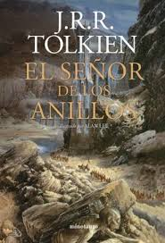

El Señor de los Anillos
La Épica que Definió la Fantasía
J.R.R. Tolkien
Editorial Minotauro - ISBN: 978-8445070208
Sinopsis de El Señor de los Anillos
Frodo Bolsón, un hobbit de la Comarca, hereda el Anillo Único, un artefacto de poder inmenso creado por el Señor Oscuro Sauron. Para salvar la Tierra Media, debe emprender un viaje épico con la Comunidad del Anillo para destruir el artefacto en los fuegos del Monte del Destino.
Recomendado por George R.R. Martin como la obra fundacional de la fantasía épica moderna. Tolkien creó un mundo con una profundidad sin precedentes: idiomas, historias, mitologías y geografías completas. Una historia de coraje, amistad y sacrificio que trasciende el género.
🎬 Análisis y Reseña del Libro
Resumen de la Tierra Media y la Comunidad del Anillo